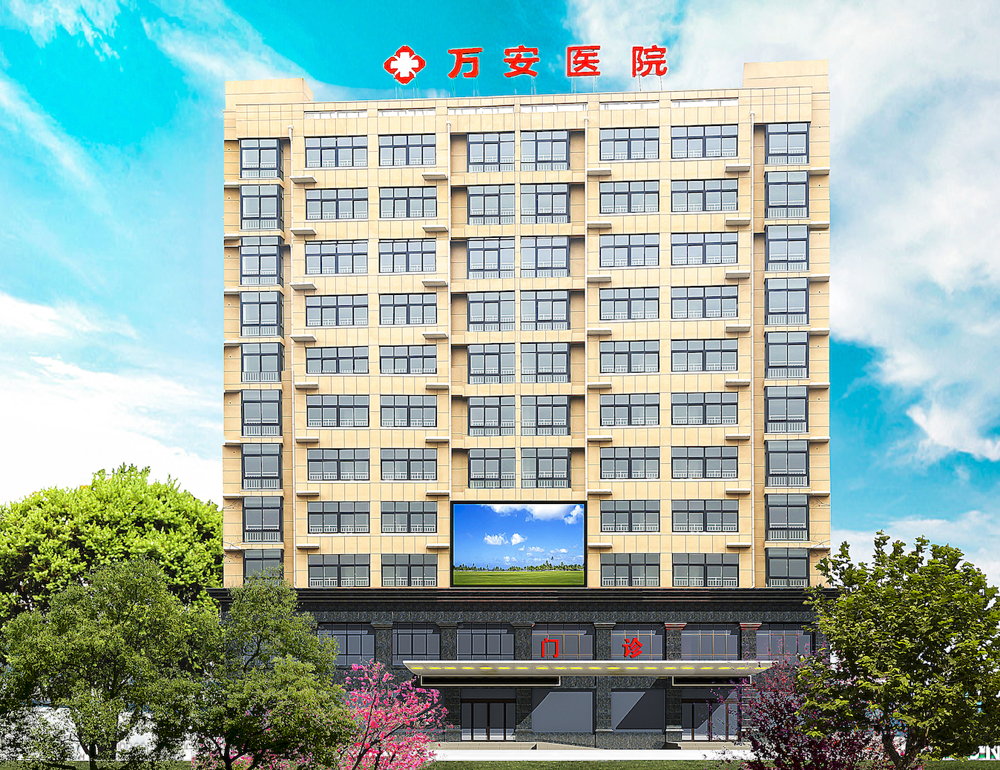
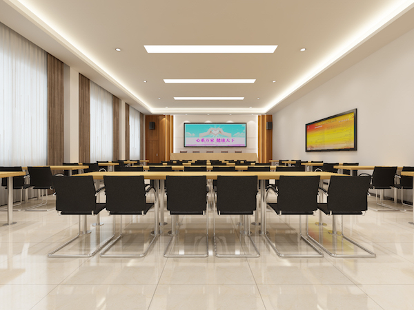
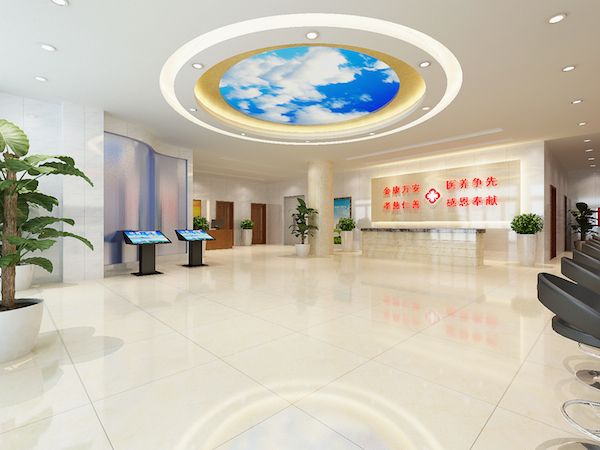
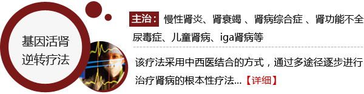
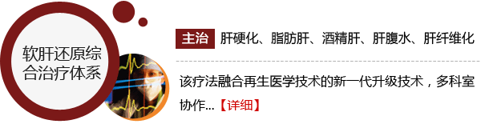
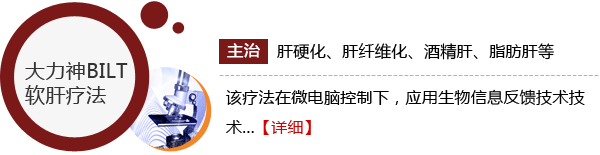

河南万安中医肾病医院
陕西中医肝肾病医院坐落于国家卫生城市·全国首家中国食品名城漯河，交通便利，环境优美。万安医院占地总面积3700平方米，
总建筑面积11000平方米，目前设有床位120张，是集医疗、保健、康复、预防、养老为一体的综合性医疗和养老机构，漯河市源汇区城镇职工医疗保险和源汇区、郾城区、召陵区居民医疗定点医院。2011年被漯河市慈善总会、漯河市民政局认定为漯河市第四慈善医院，5A级社会组织、漯河市十佳诚信民营医院。

医院拥有飞利浦16排CT、普利德PLD5600全自动胃肠造影DR一体机、全数字彩色多普勒超声诊断仪、心电工作站、动态心电监护仪、动态血压监护仪、彩超、微波治疗仪、心电监护仪、全自动生化分析仪、美国LEEP刀、数码阴道镜、经颅多普勒血流分析仪、红外乳腺诊断仪、经颅磁治疗仪、HB-JL系列痉挛肌低频治疗仪、空气波压力治疗仪、电动起立床、BE-5000型中医定定向透药治疗仪、BE-8000型智能数码多功能治疗仪等先进医疗设备。
漯河万安医院自2001年成立以来，一直秉持“救死扶伤 实行社会主义人道主义 时刻为病人着想 千方百计为病人解除病痛”的医德医风开展医疗工作。2015年3月与漯河金康护理院合并之后，实行医养结合的发展模式，多年来，漯河万安医院在原来的基础上不断深化改革，增添各种先进医疗设备，优化医疗卫生环境；聘请国家级厨师，打造一流的餐厅；斥资三十万元，建设空中花园；添置各种康复器材，促进患者康复。

医院汇集名老中医，多年来对肾、肝脏疾病的中医治疗不断创新，在治疗尿毒症、肾衰竭、肾病综合征等多种疑难肾病领域及乙肝、肝硬化、丙肝、肝腹水等肝病领域已自成一家，诊疗优势明显。
医院先后与美国、英国、法国、新加坡、澳大利亚等具有国际影响力的肾脏病专家达成学术交流合作，并聘请多个国家的医学专家担任我院的客座教授，构建起立体化发展型的诊疗服务体系。，几年来医院接受了来自英国、美国、法国、新加坡、俄罗斯、蒙古、巴基斯坦、巴布亚新几内亚、乌克兰、等数十个国家的患者来我院诊疗，收到了良好的诊疗效果，得到了各国患者的好评，让国际友人体会到了中医中药的特色疗效。我院还将加强国际医养结合的健康产业发展，形成具有万安特色的医、康、养集聚群。利用现有国际化资源推动人才交流和国际合作的方式，邀请国际知名专家、学者来万安讲学和业务指导等。

传承山大百年研究 肾脏病治疗薪火相传(此处需完善)
我院肾内科多年来一直坚持传承山大百年肾脏疾病研究根本，将西方尖端技术和祖国传统医学相结合，致力于【各种肾炎、肾功能不全、肾衰竭、肾脏综合症、尿毒症等】常见肾外科疾病的研究、预防、诊疗工作。聘请多名国内外肾脏病专家长期坐诊，并和国内外多家科研单位进行合作，组织医技开发、研究和指导，努力打造华中重点肾病诊疗机构品牌。



"工欲善其事，必先利其器"，万安中医肾病医院肾内科拥有尖端的医疗"利器"！以"高、精、尖"为标准，采用尖端的“血液光氧活肾技术”，能够从根源去除各种病因，全面修复肾组织，恢复肾脏正常功能。
筑巢引凤，济南肾病医院肾内科在肾脏疾病诊疗领域的领先地位，吸引了众多国内肾病领域权威专家纷纷加盟，共同振兴国内肾病诊疗事业。
医保定点 透明平价收费 拒绝看病难
万安医院是【医保、新农合定点单位】，根据患者实际情况，医保报销比例最高可达98%。
生命所系 健康相托 以责任铸就品质
万安肾病医院一直将“为人民服务”作为行动宗旨，在漯河地区开展了各种“医疗救助”公益活动。带头践行医院社会责任，得到媒体及社会的的高度重视，2011年被漯河市慈善总会、漯河市民政局认定为漯河市第四慈善医院，5A级社会组织、漯河市十佳诚信民营医院。